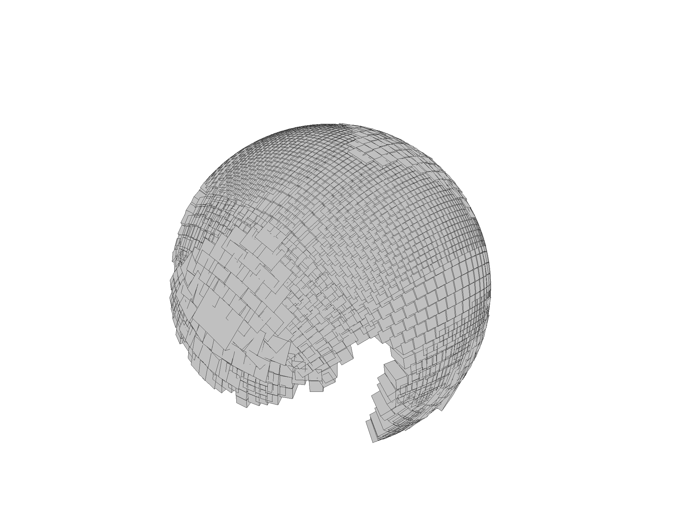

Variety Approximations
Certified variety approximation builds a finite collection of interval boxes covering part of a real algebraic variety. Each accepted box is certified by local interval/Krawczyk checks, so the output can be used as a rigorous local paving rather than just a sampled mesh. The implementation is informed by certified curve projection and surface approximation methods from [BBL25] and [BHL26].
julia> CC = AcbField(128);julia> @variables x y z;julia> surface = variety_system([x^2 + y^2 + z^2 - 1], [x, y, z]; CCRing=CC);Compiling Static Polynomial System... Compilation Done.julia> p_surface = [CC(1), CC(0), CC(0)];julia> evaluate_system(surface, p_surface)1-element Vector{AcbFieldElem}: 0julia> jacobian_system(surface, p_surface)1×3 Matrix{AcbFieldElem}: 2.00000000000000000000000000000000000000 0 0julia> surface_approx = certified_variety_approximation(surface, p_surface; tangent_radius=1e-3, normal_radius=1e-3, max_boxes=3);julia> length(surface_approx.boxes)3
CertifiedHomotopyTracking.variety_system — Function
variety_system(F_eqs, x_vars; CCRing=AcbField(256), projective=false) -> AlgebraicVarietySystemCompile symbolic equations as a static algebraic variety system.
Complex numeric coefficients are supported and are internally parameterized as fixed constants.
Options
CCRing=AcbField(256): ACB field used by the underlying system.projective=false: compile a projective/homogeneous version.
Example
CC = AcbField(128);
@variables x y z;
surface = variety_system([x^2 + y^2 + z^2 - 1], [x, y, z]; CCRing=CC);
p = [CC(1), CC(0), CC(0)];
evaluate_system(surface, p)
jacobian_system(surface, p)CertifiedHomotopyTracking.AlgebraicVarietySystem — Type
AlgebraicVarietySystemWrapper for a static polynomial system treated as an algebraic variety.
Use variety_system to build one from Symbolics expressions. The underlying SpecializedHomotopy is available through system.
CertifiedHomotopyTracking.VarietyBox — Type
VarietyBoxCertified local box for a variety.
Fields:
center: center point.frame: internal local tangent-normal data used by the certification boxes.tangent_radius: radius in tangent directions.normal_radius: radius in normal directions.krawczyk_norm: final Krawczyk norm.success: whether certification/refinement succeeded.
CertifiedHomotopyTracking.VarietyApproximation — Type
VarietyApproximationCollection of certified variety boxes returned by certified_variety_approximation.
Fields:
boxes: acceptedVarietyBoxs.attempted: number of candidate boxes attempted.rejected: number of failed candidates.skipped_overlap: number of candidates skipped because they overlapped existing boxes.max_boxes: requested maximum number of boxes.
CertifiedHomotopyTracking.system — Function
system(variety::AlgebraicVarietySystem) -> SpecializedHomotopyReturn the underlying SpecializedHomotopy.
CertifiedHomotopyTracking.evaluate_system — Function
evaluate_system(variety, x)Evaluate the defining equations of variety at x.
Example
@variables x y z;
CC = AcbField(128);
surface = variety_system([x^2 + y^2 + z^2 - 1], [x, y, z]; CCRing=CC);
evaluate_system(surface, [CC(1), CC(0), CC(0)])CertifiedHomotopyTracking.jacobian_system — Function
jacobian_system(variety, x)Evaluate the Jacobian matrix of the defining equations of variety at x.
CertifiedHomotopyTracking.certified_variety_approximation — Function
certified_variety_approximation(variety, start; kwargs...) -> VarietyApproximationBuild a small certified paving of an algebraic variety starting from one or more seed points.
Options
max_boxes=100: maximum accepted boxes.tangent_radius=0.1: initial tangent radius.normal_radius=tangent_radius: initial normal radius.normal_rho=1/8: Krawczyk threshold for normal refinement.tangent_rho=7/8: Krawczyk threshold for tangent-box validation.rank_tol=1e-10: Jacobian rank threshold.min_radius=1e-12,min_tangent_radius=min_radius: minimum allowed radii.max_radius=1.0,max_tangent_radius=max_radius: maximum allowed radii.tangent_growth_factor=2.0: growth factor when expanding tangent radii.radius_shrink_factor=0.5: shrink factor after failed refinement.max_refinement_iter=20: maximum local radius adjustment attempts.newton_tol=1e-24,max_newton_steps=10: center polishing controls.facet_anchor_scale=1.0: scale used to generate neighboring candidate anchors.overlap_factor=0.75: distance threshold for skipping overlapping boxes.threading=false,ntasks=Threads.nthreads(): process batches concurrently.
Example
@variables x y z;
CC = AcbField(128);
surface = variety_system([x^2 + y^2 + z^2 - 1], [x, y, z]; CCRing=CC);
approx = certified_variety_approximation(
surface,
[CC(1), CC(0), CC(0)];
tangent_radius=1e-3,
normal_radius=1e-3,
max_boxes=5,
)
length(approx.boxes)CertifiedHomotopyTracking.export_variety_obj — Function
export_variety_obj(boxes, filename)
export_variety_obj(approx::VarietyApproximation, filename)
export_variety_obj(box::VarietyBox, filename)Export certified variety boxes to a simple Wavefront OBJ file.
Currently supports ambient dimension at most 3.
OBJ Export Example
Build a larger surface approximation and export the certified boxes as a Wavefront OBJ file.
CC = AcbField(128);
@variables x y z;
surface = variety_system([x^2 + y^2 + z^2 - 1], [x, y, z]; CCRing=CC);
p_surface = [CC(1), CC(0), CC(0)];
surface_approx = certified_variety_approximation(
surface,
p_surface;
tangent_radius=1e-3,
normal_radius=1e-3,
max_boxes=3000,
threading=true,
ntasks=6,
);
export_variety_obj(surface_approx, "sphere_boxes.obj")
References
- [BBL25]
- M. Burr, M. Byrd and K. Lee. Certified algebraic curve projections by path tracking. In: Proceedings of the 2025 International Symposium on Symbolic and Algebraic Computation (2025); pp. 87–96.
- [BHL26]
- M. Burr, J. D. Hauenstein and K. Lee. Certified surface approximations using the interval Krawczyk test, arXiv preprint arXiv:2602.07718 (2026).